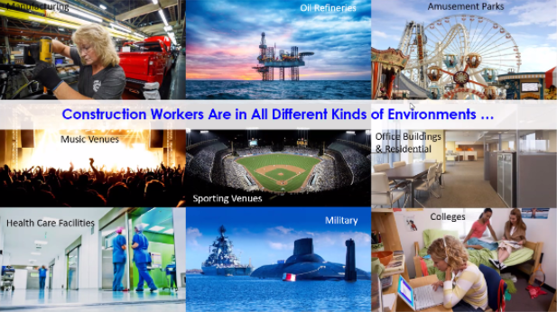
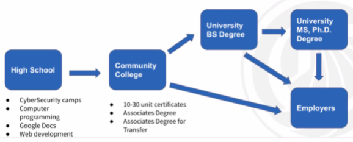

My Experiences in the Engineering Academy
During my time in the engineering program, I have met several industry professionals through workplace field trips and guest speakers. When I met them, I learned many aspects of the field of engineering they work in, including the field itself, the work they do, and how they do their work. As I met more and more professionals, I gained more knowledge about the various careers in engineering and how it feels like to work as an engineer.
Field Trips
Roche Molecular Systems
March 4, 2020
At one point during my time in the engineering academy, I went on a field trip to the Pleasonton, CA office for Roche Molecular Systems with other engineering students. During the field trip, we explored the various forms of technology used by the company used to conduct research and experiments. One instrument that impressed me was the DNA amplifier. The sizes of the DNA amplifiers shown to us ranged from a size larger than a refrigerator to a size nearly that of a pencil box! At Roche, I also met many of the workers at the company. One of the workers who I met, Lisa Lee Pate, works in the clinical field and creates tests for diseases, and taught us about disease tests and the process of making them. We also met a marketer at Roche, Patrice Riley, who told us her story about choosing a career. Instead of a scientific field, Riley chose English as her college major, and originally wanted to work as a teacher.

|
||
| A Roche employee explaining her lab work. | Students lining up to understand a biological process taught to them. | One lab room in the Roche Molecular Systems facility viewed from the hallway. |
2021 TeenTechSF STEM Inclusivity Forum
April 10, 2021
At the 2021 TeenTechSF STEM Inclusivity Forum, I met many industry professionals working in the STEM field who shared their career stories and the work they do today. One of the speakers in this presentation was Bonnie Chiu, who founded a social enterprise called Lensational. I was amazed to discover that Lensational offered a new avenue for communication for many people around the world, as it allowed many illiterate people to communicate through photography. I also met Justin Friend, the Chief of Staff at Salesforce, who discussed his role in maintaining diversity and inclusion throughout his company. For example, he presented goals such as giving every Salesforce employee a voice and diversifying the company’s US workforce by including more employees from underrepresented groups, such as women and minorities. After listening to the presentations from various speakers, I attended a workshop about the Pygame module, which allows for the creation of animations in the Python programming language. With an instructor, I developed a snowfall animation with Python. Not only did I learn about the stories of many professionals in the STEM field, but I also enjoyed using Python to program computer graphics.
| Photos shared on Lensational by people worldwide. | Salesforce's pillars for racial equality and justice. | Snowfall animation created using Pygame. |
Junior Achievement Tech & Innovation Summit
September 30, 2021
The Junior Achievement Tech & Innovation Summit was another opportunity for me to meet more industry professionals and learn about their work. I attended a machine learning workshop at this event, which was headed by Nisha Nadkarni and Laura Salinas, who are Startup Solution Architects at Amazon. They showed us two Amazon AI services,
Amazon Comprehend
and
Amazon Rekognition.
They demonstrated how these two algorithms work, described how Amazon Comprehend can determine the sentiment of a sentence and how Amazon Rekognition determines what an image represents. I also met Shilpa Ramaswamy, who is a Director of Product Management at Salesforce. She described how she initially did not want to pursue a career in IT even though her father wanted her to, and she earned a PhD in Neuroscience. However, even though she initially did not aim for an IT career, she was an IT Consultant at Etherios, the first company she worked for. Ramaswamy also presented advice on choosing a future career, such as identifying one’s strengths, weaknesses and values. I enjoyed learning about some of the services developed by technology companies today and the advice current industry professionals have for deciding one’s career.
| A demo of Amazon Comprehend, with the input and some of the output shown. | A demo of Amazon Rekognition, with the input and output shown. | Ramaswamy's education and career pathway. |
Career Technical Education Webinar Series
February 2 - 23, 2022
In February 2022, I attended three webinars, which were on Construction, Information and Communications Technology, and Information Communications Technology and Digital Media careers. In the webinar about construction careers, I learned how there is a great need for construction workers, how construction careers pay well, and how the construction industry is recession-proof. I also learned that there are many different types of construction workers, such as electricians, insulation workers, and hazardous material removal workers, and there are many programs at community colleges that can help prepare for such careers. In the Information and Communications Technology Webinar, I learned about careers in Cloud Computing SysOps and Enterprise Security, and the certifications needed for them. In the Information Communications Technology and Digital Media Webinar, I learned about other careers, such as web development and multimedia artists, and how people constantly improve their certification and position in their career. During these presentations, I was also introduced to
bayict.org
, a website that has descriptions for
many careers and the certifications
needed for them. I loved learning about different engineering-related careers and the various ways prospective workers can prepare for them.
|  |  | |
| Various pictures of the different environments construction workers work in. | Different information and communications technology jobs and their corresponding hourly pay. | Possible educational pathways to a information and communications technology job. |
Guest Speakers
Maynard Holliday
October 11, 2019
From Maynard Holliday’s talk, I learned about the Chernobyl accident and the solutions that are explored to cope with its lasting effects. During Holliday’s talk, I learned how the Chernobyl accident happened in 1986 and was caused due to a mistake during a nightly test, which caused the explosion of a reactor that released radioactive material. As the radiation from the accident was very intense and spread around the whole world, there were many structures built to prevent the spread of radiation. Because of the radiation, Chernobyl is too risky for human exploration, so robots were developed for exploring the area. I found it interesting to learn how robots can be used to explore places that were unsafe for humans to explore, as it can drastically speed up the process of making discoveries about such nuclear accidents and how they will affect the world in the future. From his talk, I was amazed at how the Chernobyl incident turned into a critical problem due to the spread of radiation, and I was also impressed at how the use of robots can make the exploration of areas unsafe for humans still a possibility.
Jason Yosinski
November 5, 2019
Another interesting experience as a member of the Engineering Academy was learning about artificial intelligence and machine learning during a class presentation by a guest speaker, Jason Yosinski. He explained how engineers tried to make AI for the past few decades, while only the AI from the best decade worked well. From his discussion of machine learning, I learned more about how machine learning works, which partly relies on a program changing its own parameters. Yosinski also showed me and my class a program that identifies images of a school bus, which he also explained to us. He said that one of the ways his image identifier works is by taking images of parts of a school bus and having the program to reference these images as guides on what should and should not look like a school bus. Even though I already have an interest in AI and computer programming, he inspired me more in computer science by deepening my knowledge of the possibilities of what computers can do.
Gracie Ermi
April 28, 2021
In Gracie Ermi’s talk, I learned more about machine learning and how it is applied to wildlife conservation. Manually reviewing the images and videos taken in wildlife surveys takes many people and a long time. At Vulcan, the company Ermi works for, she develops software for wildlife conservation to automate this review process, such as algorithms for identifying or detecting animals in images. She also described how the health assessment process for whales takes 6 months for one month of drone footage, and how Vulcan is creating software to accelerate this process. Ermi also described the field of machine learning in general, and how it is used to create artificial intelligence technologies through making machines learn patterns. I enjoyed learning about how artificial intelligence can drastically speed up wildlife conservation in different ways, and how it can play a key role in monitoring ecosystems.
Donald James
December 8, 2021
At Donald James’s presentation, I learned more about NASA and how maintaining good manners is essential in the workplace. James is currently retired and used to work at the NASA Ames Center in Silicon Valley for 35 years. In his talk, I learned how NASA has 10 facilities in the United States, and how NASA is currently working on projects such as Mars missions and environmentally-friendly aircraft. More importantly, I learned the importance of manners in the workplace. James described how being smart is not the only key to being hired by or maintaining a career at NASA, and how smart people were fired from NASA due to poor manners. He described how manners involve not only saying “thanks” or “sorry”, but how people show up, listen, or communicate to each other through behavior and body language. I ultimately gained a new perspective of manners in James’s talk, learning about how people constantly need to maintain good manners whenever they are around other people.